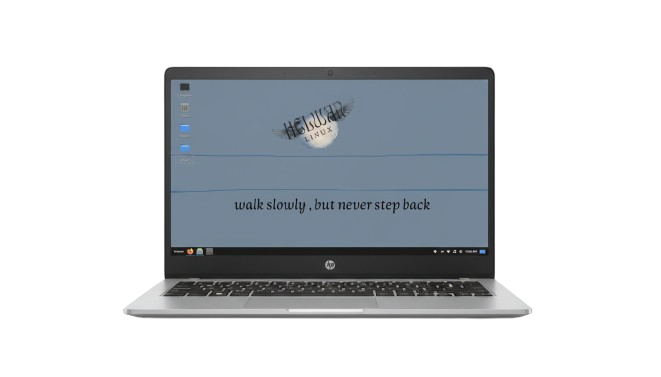

Visit Channel
Visit Channel
Arch Power, Helwan Simplicity: The Helwan Linux Design Philosophy
Helwan Linux believes that the power and flexibility of Arch Linux should be accessible to everyone, regardless of their experience level. Our philosophy is not about fundamentally changing the core system, but rather building a reliable bridge between the power of the command line and the ease of a graphical interface.
Our primary goal is to remove the barrier of complexity by developing a comprehensive suite of local GUI tools designed to encapsulate complex system commands into simple clicks. This provides a reliable and streamlined system maintenance and management experience for both beginners and experts.
The Core Helwan Linux Tool Suite
This collection of tools is the practical proof of our philosophy. Each application is designed to be lightweight, simple, and effective at its specific task.
1. Administration and System Maintenance
- hpm — Helwan Package Manager
- A user-friendly package manager frontend for Pacman, simplifying package management with clear and intuitive commands while retaining full Arch power.
- hel-netfix
- Graphical network and system repair tool. Condenses critical maintenance commands (like cache clearing and dependency fixing) into single-click operations.
- helufw
- GUI firewall configuration tool. Provides a simple interface to manage UFW rules without relying on the command line.
- hel-process
- GUI task and process manager. Allows monitoring, analysis, and management of running system processes easily and effectively.
- helfetch-ng
- Enhanced system info fetch tool. Provides system information and statistics in an organized and straightforward manner.
- hel-sec-audit
- Quick system security scan. Helps users perform a basic, periodic security check on their system.
2. Education and User Onboarding
- hel-welcome-app
- First-time user guide and tips. A welcome application that provides essential tips and guidance for the first steps in using the distribution.
- hel-tutorial
- Interactive Linux tutorials for beginners. A set of interactive, guided lessons to help new users understand and utilize Linux fundamentals.
3. Development and General Utilities
- hel-builder
- Tool to create and edit PKGBUILD files. A graphical utility that simplifies the package compilation and editing process for developers.
- hel-text-editor
- Lightweight code and text editor, designed for quick editing and documentation tasks.
- hel-markdown
- Simple markdown editor for documentation, used for creating and editing technical documents and blogs efficiently.
- hel-diagram
- Diagram creation tool for developers and students, useful for simple chart and diagram creation.
- hel-web-server
- Local dev server tool with a GUI, facilitating the quick setup of basic development environments.
- hel-usb-writer
- Graphical tool to safely and intuitively burn ISO images to USB drives.
- hel-store
- Minimal GUI app store, providing an easy interface for browsing and installing packages.
- hel-ai-gate
- Lightweight AI assistant bridge, providing access to basic AI functionality.
- hel-terminal
- Customizable terminal emulator (demo version), offering a comfortable and aesthetic terminal environment.
- hel-insight
- Tool to view and analyze statistics from CSV and Excel files, useful for simple data analysis work.
- hel-blocks
- Simple Tetris game, to provide some light entertainment.
The Global Legacy: A Call to Shared Stewardship
Helwan Linux was founded on an individual dream to build a technical and cultural bridge. Today, following its launch and the documentation of its philosophy in a comprehensive, multilingual book, this project is no longer the property of a single founder. It has become a shared global technological legacy.
To ensure the sustainability of this legacy and empower it to stand alongside the giants, we ask you not just to be users, but to become stewards of this inheritance. Every line of code reviewed, every bug report submitted, and every small financial contribution is a vital guarantee that this philosophy will continue to thrive for future generations of developers and enthusiasts worldwide.
Your participation is our only strength.
Last updated: September 2025